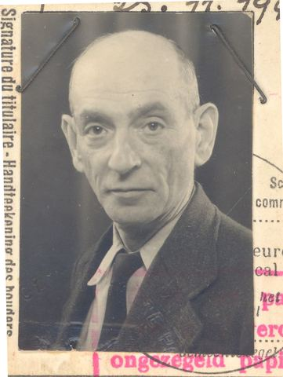
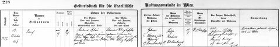

Josef 'Joshi' Blau
1914–1942
Life events
| Born | |
|---|---|
| Lived | |
| Married | 1938 · Grete Stör · Leopoldstädter Tempel, 1020 Tempelgasse 5, Vienna, Austria Map |
| Nazi Persecution | |
| Deportation | 10 Aug 1942 · Caserne Dossin (Malines-Mechelen) Concentration Camp, Mechelen, Antwerpen, Belgium Map · Deported with Transport III to Auschwitz. #386. DÖWID 71044 |
| Died | 22 Sep 1942 · Auschwitz Death Camp, Oswiecim, Malopolskie, Poland Map · Murdered by Nazis in the Holocaust. |
| Occupation | Goldsmith |
Family
Parents

Richard Blau1888–1943
Scheindel 'Charlotte' Klinghoffer1886–1930
Josef 'Joshi' Blau1914–1942

Grete Stör1910–1942
Photos

Josef 'Joshi' Blau

Anna Maria Schepan
Teresa Feldman
Josef Blau
Betti Borbola Fuchs
Samuel Blau
Ilonka 'Helen' Blau
+13 more
Robert Weiss
Scheindel 'Charlotte' Klinghoffer
Josef 'Joshi' Blau

Josef 'Joshi' Blau

Richard Blau
Kurt Blau
Josef 'Joshi' Blau
Grete Stör

Josef 'Joshi' Blau

Josef 'Joshi' Blau
Josef 'Joshi' Blau